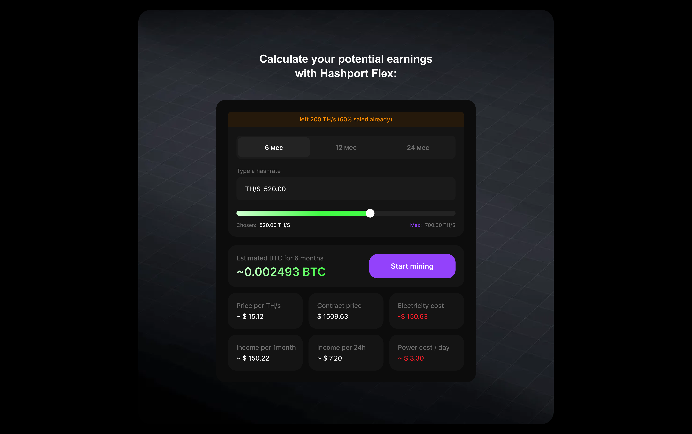
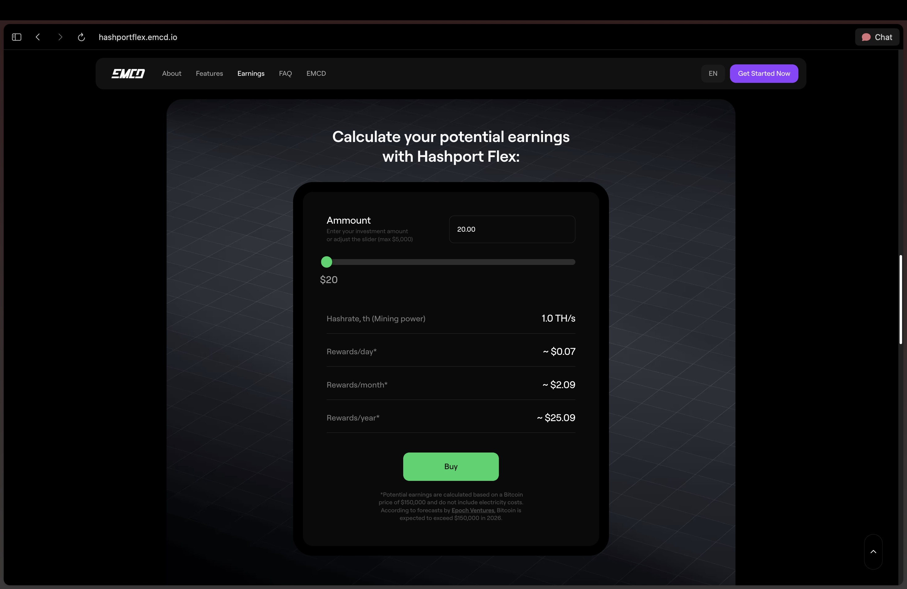
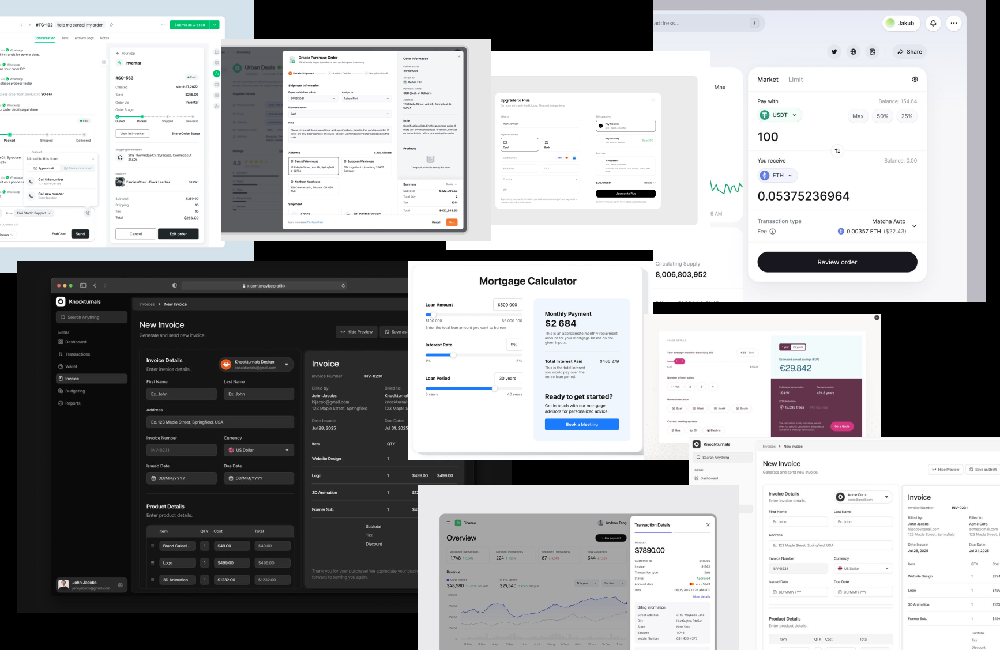
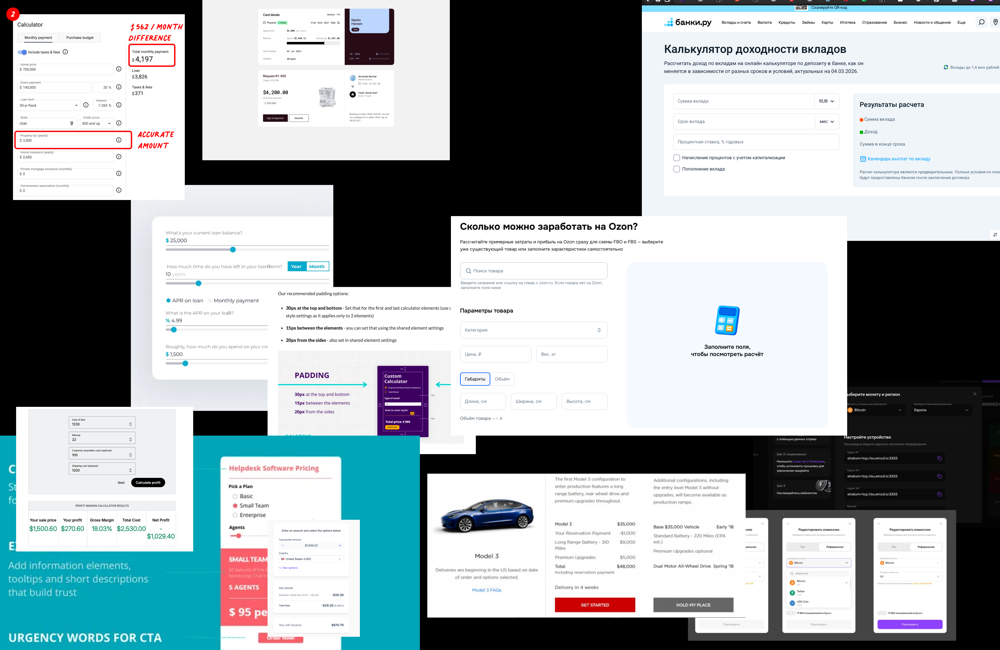
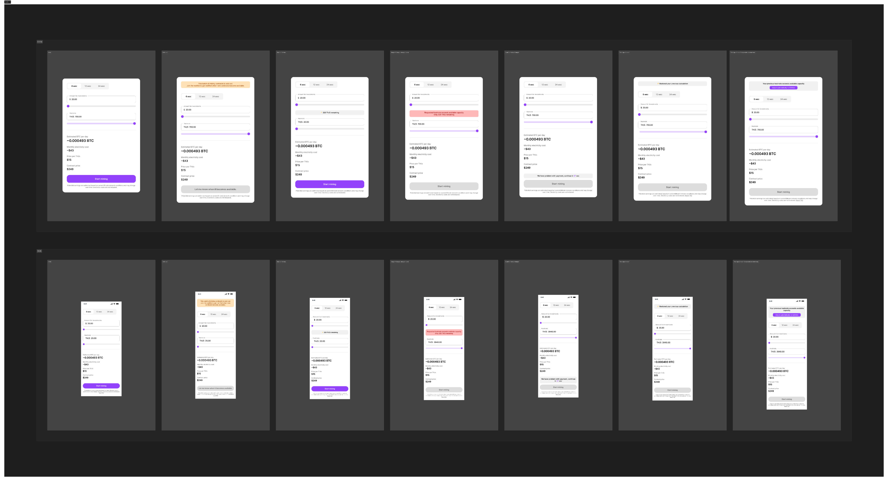
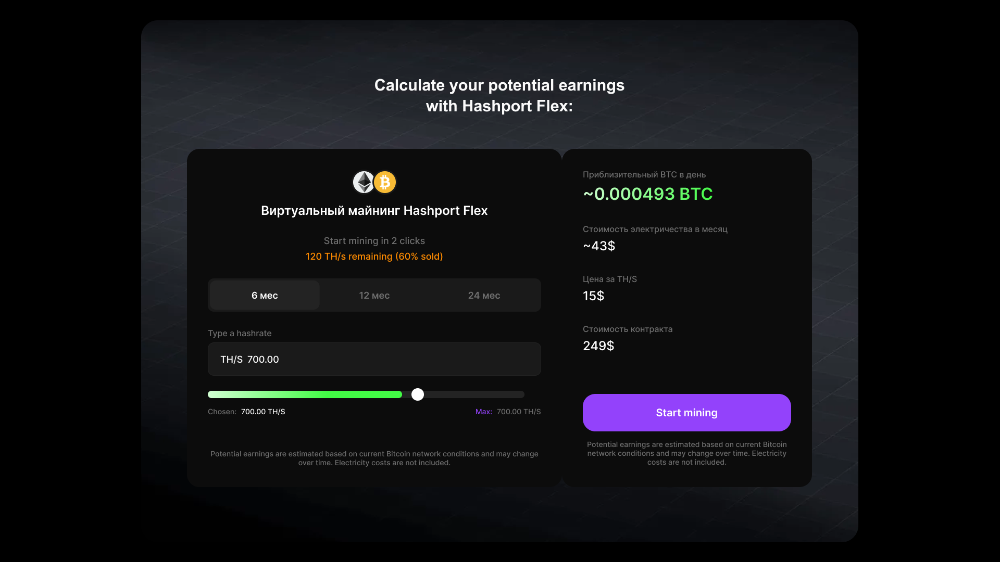
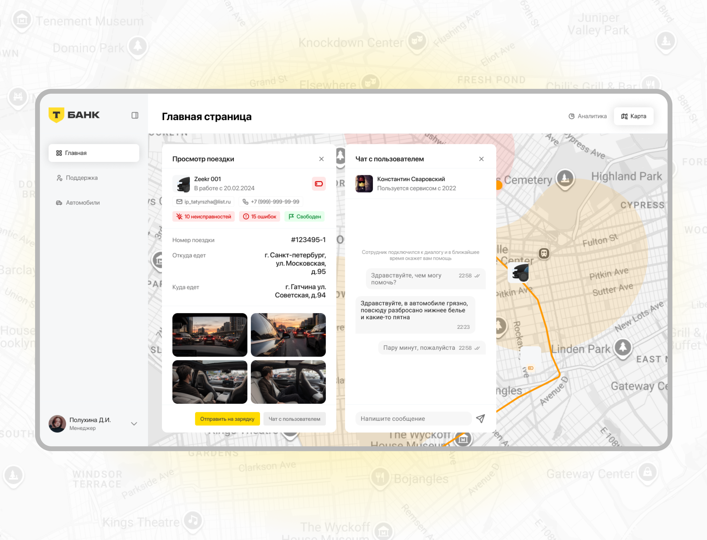
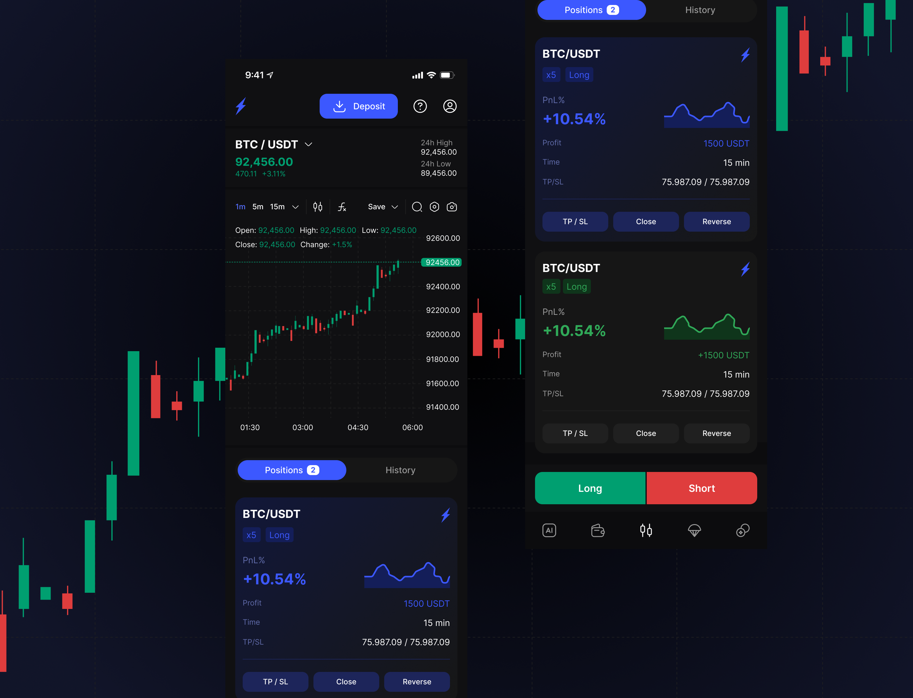
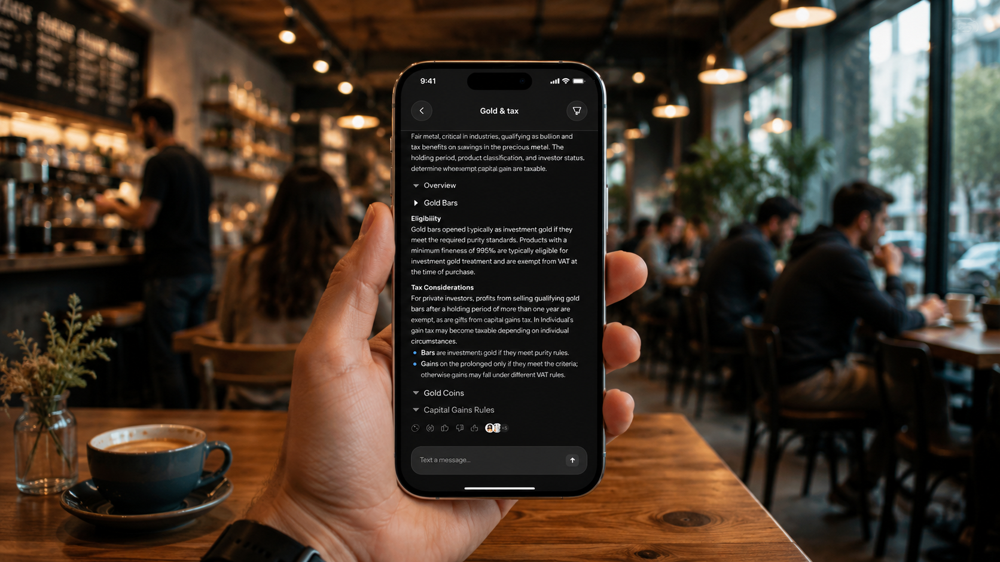
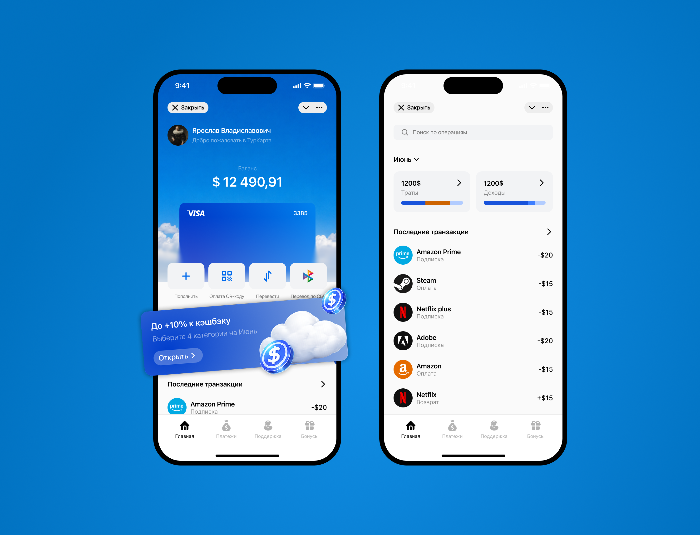

Контекст
Калькулятор доходности для покупки майнинг-контракта в EMCD
EMCD — крипто-экосистема для майнинга, инвестиций и хранения. Калькулятор доходности на hashport.emcd.io перестал справляться со своей задачей по трём причинам: лендинг устарел и визуально выпадал из новых продуктов EMCD, что подрывало доверие к расчётам; формула доходности была непрозрачной, и пользователь не понимал, из чего складывается результат; на этом фоне снижалась конверсия в покупку контракта. Нужно было переосмыслить калькулятор и превратить его в понятный self-checkout: пользователь задаёт параметры контракта, сразу видит прогноз доходности и понимает, какие действия влияют на итоговую сумму.
Задача
Обновить UX и UI калькулятора: пересобрать ввод данных, состояния, расчёт доходности и мобильный сценарий так, чтобы решение легло в визуальный язык EMCD даже без доступа к полноценной дизайн-системе.


Дискавери
Я начал с разбора сценария покупки контракта и изучил, как похожие калькуляторы устроены в финтехе и криптопродуктах. Отдельно отметил точки потери доверия: непрозрачную формулу расчёта, скрытые ограничения, резкую смену валюты, неочевидный CTA и слабый мобильный сценарий.
После этого собрал референсы интерфейсов, где калькулятор работает не как декоративный блок, а как главный инструмент принятия решения.


Low-fidelity
В low-fidelity я проверил основную механику: как пользователь выбирает мощность, срок и валюту, где видит пересчёт доходности и в какой момент переходит к покупке. На этом же этапе заложил пустые, ошибочные и загрузочные состояния, чтобы сценарий не разваливался на краевых случаях.
Мобильную версию проектировал параллельно, потому что для такого сценария нельзя просто сжать десктоп: калькулятор должен оставаться читаемым и управляемым одним большим пальцем.

High-fidelity
После согласования структуры я собрал high-fidelity-версию на базе уже запущенных интерфейсов EMCD: тёмная среда, зелёный акцент доходности, фиолетовый CTA и компактные контролы. Так решение сохранило ощущение продукта без попытки заново изобретать дизайн-систему.
Результат
Получился цельный self-checkout для покупки виртуального майнинг-контракта: пользователь задаёт мощность, срок и валюту, сразу видит прогноз доходности до оплаты и понимает, как каждый параметр влияет на итог. Расчёт стал прозрачным — исчезла главная точка потери доверия. Макет покрывает ключевые состояния (empty, loading, error, disabled), отдельный мобильный поток и готов к передаче в разработку.
Продовых данных по конверсии нет, поэтому фиксирую критерии успеха: меньше шагов до результата, понятная формула доходности, закрытые краевые состояния и рабочий сценарий с телефона.

Другие проекты

Сервис отслеживания беспилотного такси для T-Bank
Открыть фигмуUX-переработка MVP факторинговой платформы National Factoring Platform
Смотреть проект
Переработка карточки анализа сделки для Stobix
Открыть фигму
S&P Chat: AI-приложение для юридических и налоговых консультаций за 1,5 недели
Смотреть проект